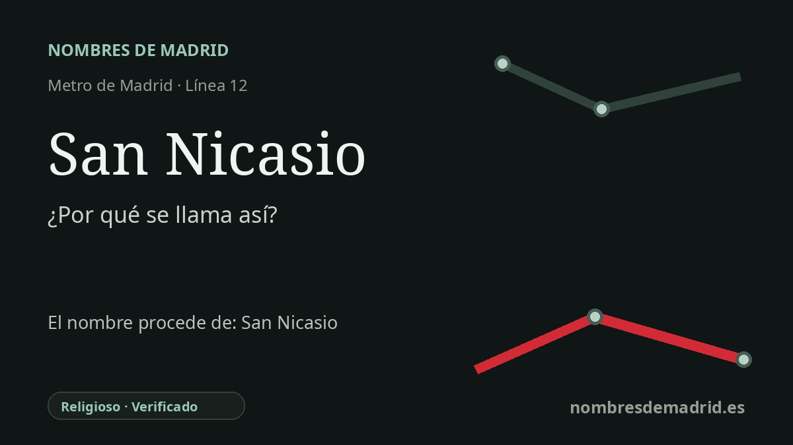

Publicado el · Investigación de Nombres de Madrid · Cómo verificamos cada origen · 6 fuentes consultadas
Respuesta rápida
La estación de San Nicasio toma su nombre del barrio leganense donde se encuentra. El topónimo procede de la devoción a San Nicasio, patrón de Leganés, centrada en la histórica ermita/parroquia levantada en el siglo XVIII sobre un culto local anterior.
La historia del nombre
La estación de San Nicasio toma su nombre del barrio de San Nicasio de Leganés. El Consorcio Regional de Transportes la incluye en la línea 12 de Metro y sitúa sus accesos en la avenida del Mar Mediterráneo y la calle de la Encina, mientras que la Comunidad de Madrid la describe expresamente como una estación situada en el barrio de San Nicasio. En el nivel inmediato de la estación, por tanto, el nombre procede del lugar donde se encuentra.
Detrás del nombre del barrio hay una devoción religiosa mucho más antigua. Leganés venera a San Nicasio como uno de sus patronos, y la ermita local, hoy parroquia, se convirtió en el hito visible alrededor del cual se fijó el topónimo. La Diócesis de Getafe, en su página de la Hermandad de San Nicasio, afirma que la devoción comenzó en el siglo XVI y cita las Relaciones Topográficas de Felipe II de 1580, donde los vecinos decían guardar el día de San Nicasio por un voto antiguo relacionado con la pestilencia.
El edificio actual corresponde a una fase posterior. Fuentes municipales y locales describen la Ermita de San Nicasio como un templo neoclásico del siglo XVIII vinculado a Ventura Rodríguez, construido en la segunda mitad de ese siglo y protegido en el catálogo municipal. La Diócesis da las fechas de 1775-1785 y señala que el Marqués de Leganés, Diego Messía de Guzmán, la encargó a Ventura Rodríguez poco antes de la muerte del arquitecto; otras fuentes locales hablan de un proyecto presentado en 1772 y de una ermita anterior, más modesta, en el mismo emplazamiento.
Esa historia religiosa también terminó formando identidad urbana. El Ayuntamiento recuerda que la Cofradía de San Nicasio se constituyó el 16 de abril de 1600 y que el acta fundacional señalaba que Leganés llevaba ya alrededor de cien años teniendo a San Nicasio por patrón para alejar las pestes. Hoy las fiestas de octubre, la hermandad y la iglesia mantienen vivo el nombre, no solo como referencia devocional sino también como identidad de distrito.
La tradición leganense documentada por la Diócesis y por historiadores locales identifica a su patrón como San Nicasio, obispo y mártir de Rouen, celebrado el 11 de octubre, no como San Nicasio de Reims. El origen del nombre de la estación está firmemente comprobado; la identidad hagiográfica debe registrarse según la tradición de Leganés, no como Nicasio de Reims.